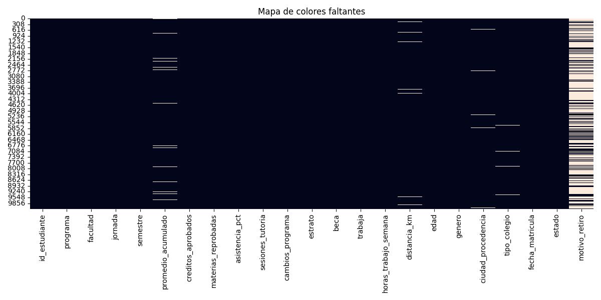
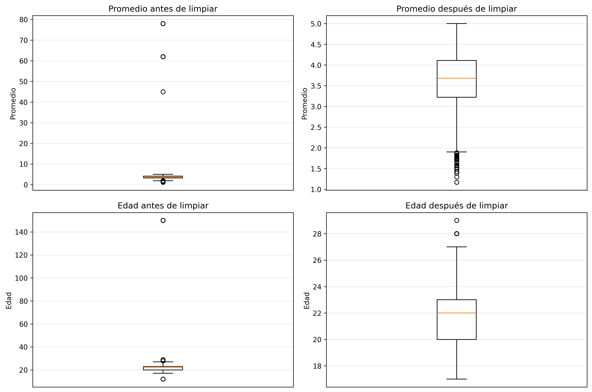
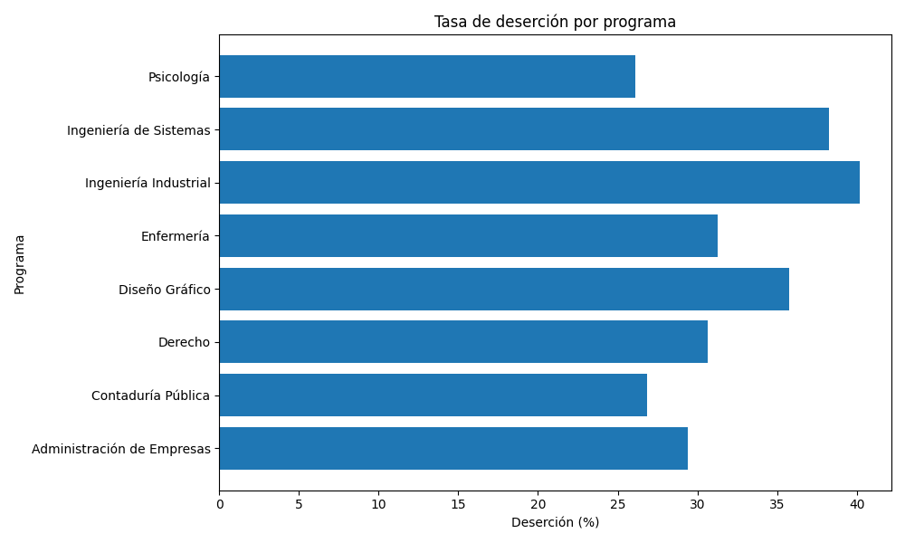
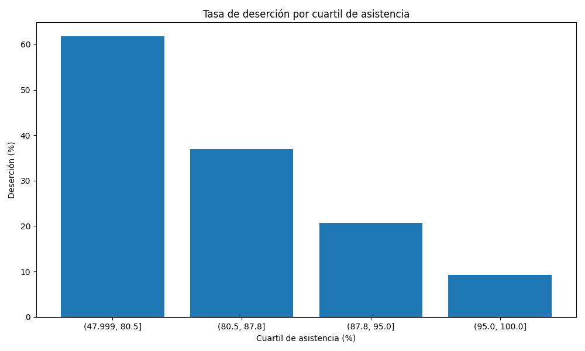

Análisis de deserción estudiantil
Resultados del taller de calidad de datos con Python y Pandas.
- Estudiantes analizados
- 10.000 10.000 filas · Un registro por estudiante.
- Columnas del dataset limpio
- 25 23 originales y 2 variables creadas.
- Edad más frecuente
- 22 años 1.723 estudiantes tienen esta edad.
- Programa con mayor deserción
- Ingeniería Industrial 40,17 % de deserción · 1.322 estudiantes.
- Programa con mayor promedio académico
- Enfermería 3,68 sobre 5 · 1.167 estudiantes en total.
- Edad promedio
- 21,73 años Calculada con 9.988 edades válidas; 12 nulos excluidos.
Promedio calculado con las notas disponibles.
Resumen del CSV limpio de este taller con datos sintéticos. Los indicadores son fijos y deben actualizarse si se regenera el análisis con otros datos. El promedio académico no representa una tasa de aprobación.
1. Valores faltantes
Permite identificar las columnas con datos vacíos.

2. Antes y después de limpiar
Comparación del promedio acumulado y la edad.

3. Deserción por programa
Porcentaje de estudiantes que desertaron en cada programa.

4. Deserción por asistencia
Comparación por cuartiles de asistencia. La asociación observada no demuestra causalidad.
